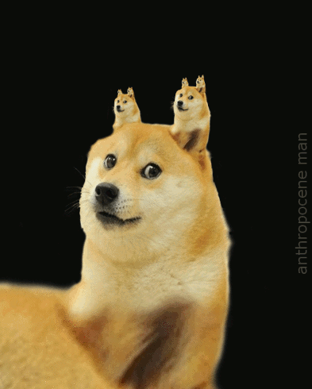
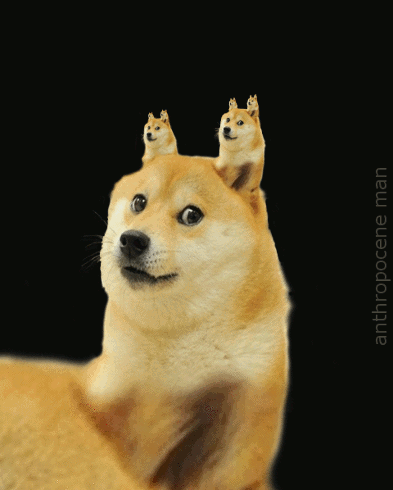
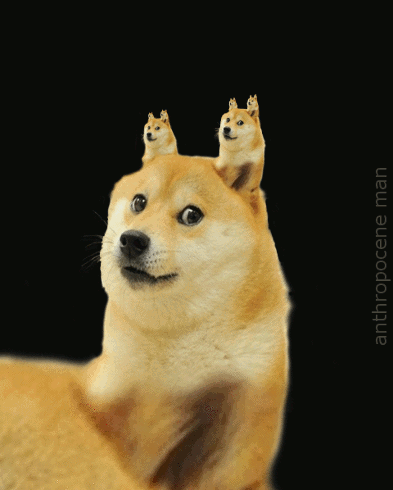

An Internet meme is a concept or idea that spreads "virally" from one person to another via the Internet. An Internet meme could be anything from an image to an email or video file; however, the most common meme is an image of a person or animal with a funny or witty caption.
